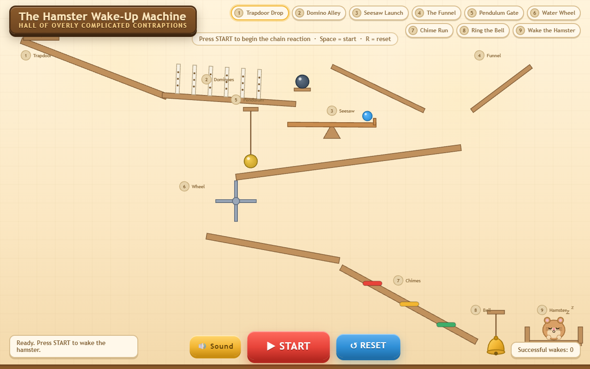
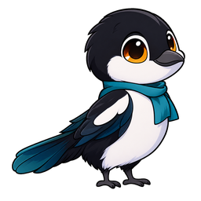
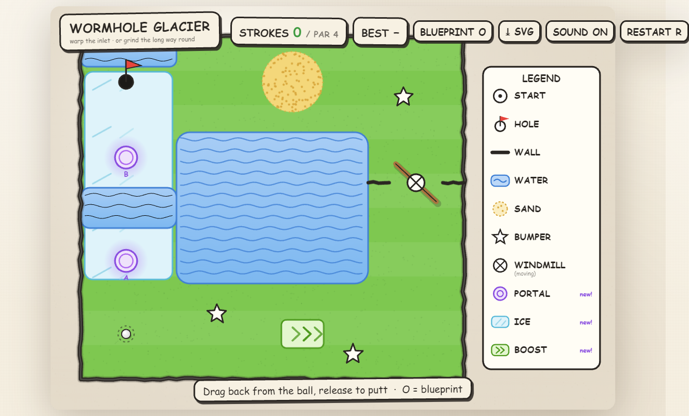
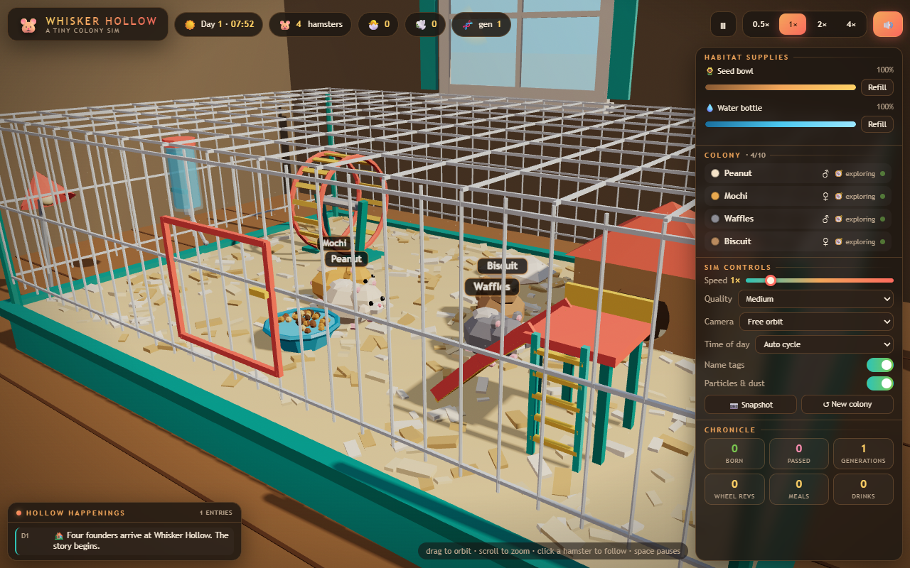

Qwen 4 solo: 5 tests, one prompt each
Original model results. Qwen Code 0.27.3, official Alibaba Token Plan, up to 60 active minutes per test.
Пять практических тестов. Один промпт на задачу, без подсказок и ручных правок результата.
KostiKoNeuro on GitHub · Telegram
1 · SVG animation · SVG-анимация
A capybara takes a hot bath in a teacup and reads a newspaper. A seamless animated sticker, one SVG file.
Капибара в чашке читает газету. Зацикленная SVG-анимация без внешних изображений.
2 · Rube Goldberg machine · Машина Голдберга
A chain reaction should ring a bell and wake a hamster. Press START; R resets.
Три первых запуска на записи не удались, затем был успешный. Цепочка работает нестабильно.

3 · Desktop pet Qwpie · Питомец-сорока
Qwen chose a magpie. It walks on the taskbar, can be tossed, sleeps when idle and reacts to copied text. A Windows Electron app, distributed as source.
Автор проверил перетаскивание и бросок. Реакции на содержимое буфера обмена работают с оговорками. Это исходники приложения, для запуска нужен Node.js.

4 · Mini golf · Мини-гольф
Wormhole Glacier: portals, a windmill, a bumper, boost and sand. Drag back from the ball and release; O overlays the blueprint; R restarts.
Механики работают, но короткий путь через портал оказался слишком лёгким.

5 · Whisker Hollow · Клетка с хомяками
An autonomous low-poly Three.js colony: food, water, a wheel, births, ageing and death. Drag to orbit, scroll to zoom, click a hamster to follow it.
В отдельной проверке: пять минут на x4, шесть рождений, три поколения. Позже автор наблюдал смерть Мочи; это не входит в тот пятиминутный замер.

Time and cost · Время и цена
13 November 2026. Main sessions used xhigh; the pet also had four short CLI requests with effort=none. No numerical scores were assigned for this page.
| Test | Active time | Known tokens |
|---|---|---|
| 1 SVG | 21.0 min | 3,883,122 |
| 2 Goldberg | 60.0 min | 25,660,445 |
| 3 Desktop pet | 60.0 min | 21,981,066 |
| 4 Mini golf | 32.1 min | 10,287,022 |
| 5 Hamsters | 37.4 min | 9,549,693 |
| Total | 210.5 min | 71,361,348 |
65,619,340 cached input + 5,147,049 uncached input + 594,959 output tokens. Reasoning is already part of output. Two interrupted Goldberg requests have no usage, so the total is incomplete.
$30.27 at Qwen3.8 Max 0902 comparison rates, plus $0.33 for existing KIE images = $30.60. This is not Qwen 4 pricing and not the actual Alibaba Token Plan bill. Comparison rates per 1M: $2 uncached input, $0.25 cached input, $6 output.
$30.60 - только сравнительный расчёт по Qwen3.8 Max с картинками KIE. Это не тариф Qwen 4 и не фактическое списание. Денежное списание Token Plan из API неизвестно. Подготовка этой страницы не потребовала новых платных вызовов.
Results and method · Результаты и условия